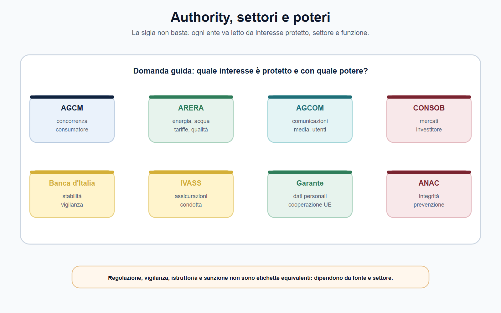
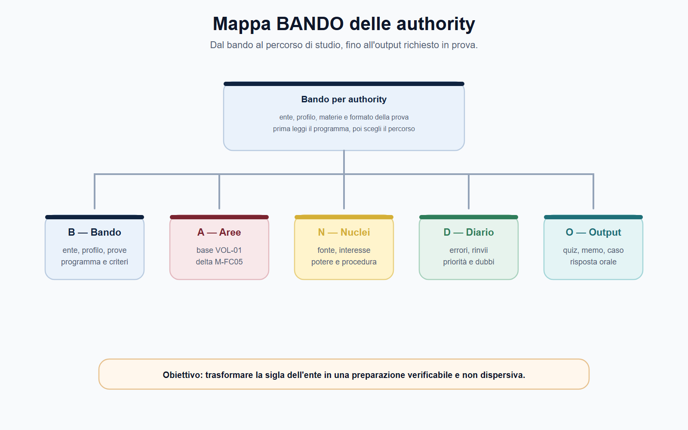
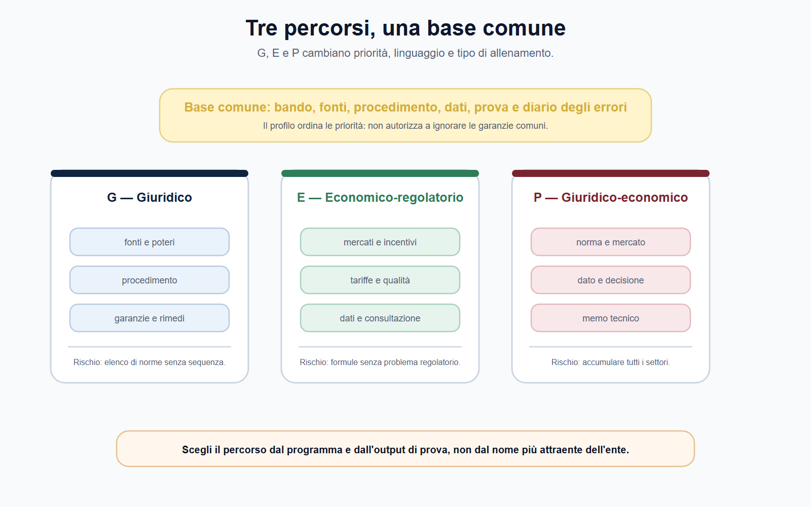
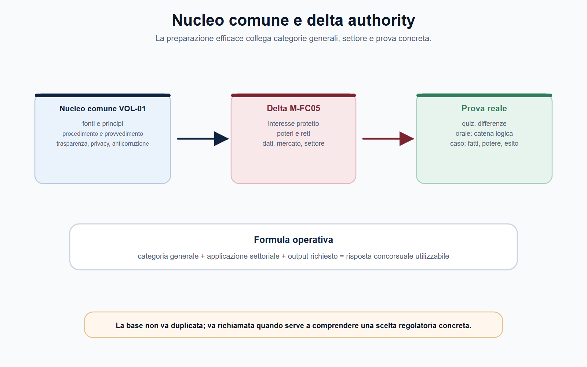

VOL-05 · Capitolo 01
M-FC05
Le authority viste
dal candidato
Un concorso in un’autorità indipendente non richiede soltanto di ricordare una legge istitutiva o di riconoscere il nome di un ente. Richiede di entrare nel punto di vista di chi regola, vigila, raccoglie dati, istruisce procedimenti, valuta evidenze e adotta o prepara decisioni.
01 · Il problema in prova
Due errori che fanno perdere tempo
Chi legge la parola «authority» tende a fare una di due mosse. La prima è considerare tutte le autorità identiche e studiare un elenco di sigle. La seconda è isolarsi in un solo settore senza capire quale parte del metodo, del procedimento e dell’economia della regolazione sia riutilizzabile. Entrambe fanno partire dal capitolo sbagliato.
Che cos’è questo capitolo
Non è una rassegna di enti. È una mappa di lavoro: una norma attribuisce competenze; un interesse collettivo richiede protezione; un procedimento raccoglie elementi e garantisce il contraddittorio; un atto produce effetti; un giudice o altra sede verifica la legittimità.
A che serve in prova
A distinguere il ruolo di un’autorità da quello di un ministero o di un ente che gestisce un servizio; a leggere il bando (settore, profilo, prove, materie, output); a scegliere il percorso G, E o P senza sommare tutti i programmi.
Fonte, interesse protetto, potere, procedimento, decisione o rimedio, controllo.
Questa sequenza è il filo del volume. Una stessa parola, come «vigilanza» o «sanzione», assume contenuti concreti solo dopo avere individuato la fonte e il settore. Saltare dal nome dell’ente alla sanzione è già un errore.
02 · Distinzione
Authority, ministero, ente pubblico
Una domanda orale può chiedere perché esistano autorità specializzate. La risposta non è una formula sull’indipendenza. Occorre spiegare la funzione. La distinzione non è assoluta: le competenze si intrecciano con legislatore, Governo, Commissione europea, reti, amministrazioni di settore e giudice.
| Che cosa fa | Errore se lo confondi | |
|---|---|---|
| Ministero | Partecipa all’indirizzo politico-amministrativo e organizza l’azione governativa nel settore di competenza. | Tratti l’autorità come un ministero senza ministro. |
| Ente pubblico | Può svolgere servizi, amministrare risorse, erogare prestazioni o curare interessi definiti dalla legge. | Confondi chi gestisce un servizio con chi lo regola o lo vigila. |
| Autorità | Presidia un mercato, un servizio o un interesse sensibile con poteri tecnici e giuridici attribuiti dalla legge, con garanzie di autonomia e procedure controllabili. | Le attribuisci poteri generici o la sottrai a legalità e controllo. |
La parola «indipendente» non significa che l’autorità agisca fuori dall’ordinamento. L’indipendenza riguarda il modo in cui la legge costruisce l’ente e protegge l’esercizio delle funzioni. Legalità, competenza, motivazione, trasparenza, garanzie procedimentali e controllo restano essenziali.
03 · Sei domande
Non partire dagli articoli da memorizzare
Per prepararti, parti da sei controlli. Ogni domanda individua un pezzo della risposta e evita di attribuire poteri generici all’ente.
| Domanda | Che cosa individua | Utilità in prova |
|---|---|---|
| Qual è la fonte attributiva? | La legge o la fonte UE che definisce competenze e confini. | Evita di attribuire poteri generici all’ente. |
| Quale interesse è protetto? | Concorrenza, utenti, investitori, stabilità, dati personali, integrità pubblica. | Dà senso alla risposta e al caso pratico. |
| Quale mercato o attività? | Servizi pubblici, comunicazioni, mercati finanziari, trattamenti di dati, contratti. | Permette di riconoscere il settore. |
| Quali poteri sono rilevanti? | Regolazione, vigilanza, richiesta di informazioni, ispezione, sanzione, consultazione. | Trasforma una definizione in un’azione. |
| Quale procedimento? | Consultazione, istruttoria, reclamo, segnalazione, controllo o procedura sanzionatoria. | Guida l’ordine della risposta scritta. |
| Quale output chiede il bando? | Quesito, caso, schema di atto, analisi, memo o colloquio. | Decide come allenarti. |
04 · Mappa degli enti
Non una lista, una scelta di percorso
AGCM, ARERA, AGCOM, CONSOB, Banca d’Italia, IVASS, Garante e ANAC operano in settori differenti, con fonti, organi e poteri non sovrapponibili. La tabella orienta lo studio. Non sostituisce le pagine istituzionali né il programma del bando target.

La sigla è solo il punto di partenza: la preparazione nasce dalla relazione tra settore, interesse protetto e potere.
05 · Scelta di percorso
Domanda guida, materie, profilo
Se il bando riguarda un funzionario giuridico AGCM, non inizi da Solvency II. Se il profilo è economico-regolatorio ARERA, non rinvii economia della regolazione alla fine. Il volume aiuta a scegliere; il bando rende la scelta obbligatoria.
| Autorità | Domanda guida | Percorso prevalente |
|---|---|---|
| AGCM | Il comportamento d’impresa altera concorrenza o tutela del consumatore? | G, P — intese, abuso, concentrazioni, pratiche scorrette, istruttoria. |
| ARERA | Come si regolano qualità, tariffe e tutela degli utenti nei servizi pubblici? | E, P — tariffazione, dati, consultazione, contabilità regolatoria. |
| AGCOM | Quali regole presidiano comunicazioni, media, utenti e piattaforme? | G, E, P — audiovisivo, pluralismo, mercati digitali. |
| CONSOB | Come si proteggono trasparenza e correttezza dei mercati? | G, E, P — emittenti, intermediari, abusi, tutela dell’investitore. |
| Banca d’Italia e IVASS | Come opera la vigilanza prudenziale e di settore? | E, P — stabilità, rischi, pagamenti, assicurazioni, clientela. |
| Garante e ANAC | Dati personali e cooperazione; prevenzione, integrità e contratti. | G, P — reclami, misure, PNA, whistleblowing, vigilanza. |
06 · BANDO
Cinque decisioni su questo capitolo
Il Metodo BANDO impedisce di usare il volume come un’enciclopedia. Compila il Decoder prima di dividere le ore. Un piano corretto non dice «lunedì diritto, martedì economia»: dice quale potere, quale nucleo e quale output alleni.
| Che cosa fai | Se la salti | |
|---|---|---|
| B — Bando | Quale ente, profilo, prova e programma? Evidenzia parole del settore, allegati, criteri e forma delle prove. | Studi un ente isolato, non il concorso. |
| A — Aree | Quali aree sono comuni e quali specialistiche? Separa VOL-01, nucleo comune e verticale settoriale. | Ripeti il diritto amministrativo generale e tralasci il delta. |
| N — Nuclei | Potere, procedimento, garanzia, rimedio, rete, dato: concetti da non confondere. | Tratti «vigilanza» come etichetta unica. |
| D — Diario | Registra confusione fra enti, fonti non verificate e casi non conclusi. | Ripeti le analogie automatiche all’orale. |
| O — Output | Risposta orale, schema di istruttoria, memo o caso, secondo il bando. | Elenco di sigle senza decisione. |
07 · Dal bando al piano
Trasformare la sigla in preparazione
Prima leggi il programma, poi scegli il percorso. L’obiettivo è trasformare ente, profilo e formato della prova in scelte di studio verificabili, non in un elenco di materie.

Dal bando al percorso, fino all’output da allenare: un campo vuoto indica una verifica ancora necessaria.
08 · Profili
Tre percorsi, non tre qualifiche
G, E e P non sostituiscono le denominazioni dei bandi: ordinano lo studio. Un candidato P non accumula programmi. Sa passare dalla norma al mercato, dal dato al procedimento e dalla decisione alla motivazione. Prima nucleo comune, poi una verticale principale, poi confronti ragionati.
| Profilo | Identità di studio | Priorità | Rischio |
|---|---|---|---|
| G — giuridico | Funzionario giuridico AGCM o authority con forte componente procedimentale. | Fonti, poteri, garanzie, istruttoria, rimedi, sanzioni, tutela di utenti e destinatari. | Ridurre tutto a un elenco di norme senza ricostruire il procedimento. |
| E — economico-regolatorio | Funzionario ARERA o profilo con analisi di mercati, tariffe, dati e incentivi. | Economia industriale, regolazione, indicatori, dati, consultazione e qualità. | Studiare formule senza legarle a un problema regolatorio. |
| P — giuridico-economico | Profilo premium cross-authority. | Integrazione tra fonti, istituzioni, mercato, poteri e comunicazione tecnica. | Imparare tutti i settori allo stesso livello di profondità. |
09 · Pesi diversi
Stesse basi, linguaggi diversi
I tre percorsi condividono procedimento, legalità e output. Cambiano i pesi: fonti e garanzie per G; dati, tariffe e incentivi per E; integrazione e memo tecnico per P.

I tre percorsi condividono le basi, ma richiedono pesi diversi per fonti, dati, mercato e output di prova.
10 · Comune e specialistico
Il VOL-05 non ripete il VOL-01
La base risponde alla domanda «che cos’è un procedimento?». Il volume specialistico risponde a «come funziona quando l’autorità raccoglie evidenze, consulta il mercato, istruisce una violazione o adotta una misura nel proprio settore?».
| Base VOL-01 | Delta VOL-05 |
|---|---|
| Fonti, principi, diritto UE introduttivo | Fonti UE di settore, reti e cooperazione. |
| Procedimento, provvedimento, tutela | Consultazione, istruttoria tecnica, impegni, rimedi. |
| Pubblico impiego e responsabilità | Regolamenti del personale dell’ente, da verificare al cut-off. |
| Privacy, trasparenza, anticorruzione | Garante e ANAC come autorità: poteri e procedimenti. |
La risposta utile nasce dal collegamento tra categoria generale, applicazione settoriale e richiesta della prova.

11 · Caso guidato
Il manuale generale non basta
Un candidato trova un bando per un profilo economico-regolatorio. Nel programma compaiono energia, mercati, tariffe, regolazione, analisi dei dati, diritto UE e inglese. Decide di acquistare un manuale generale di diritto amministrativo e di ripassare soltanto definizioni di economia.
| Passaggio | Ragionamento |
|---|---|
| Che cosa ha visto | Ha riconosciuto alcune aree, ma non ha costruito il profilo. Diritto amministrativo e inglese sono basi, non il centro. |
| Che cosa chiede il bando | Collegare servizi regolati, incentivi, tariffa, qualità, evidenze e decisione. Il percorso corretto è E. |
| Decoder | Settore = servizi pubblici regolati; poteri = regolazione e controllo; nuclei = tariffa, qualità, dati, incentivi, consultazione. |
| Esercizio | Nota di duecento parole che distingua costo, qualità del servizio e tutela dell’utente. Solo dopo, il calendario. |
La missione istituzionale aiuta a interpretare il sistema, ma non attribuisce automaticamente qualsiasi potere. Ogni potere richiede fonte, oggetto e procedimento.
12 · Sequenza
Come si ragiona sul fascicolo
Prima la qualificazione, poi il procedimento, poi l’output. Un secondo lettore deve poter ricostruire il percorso senza conoscere l’intenzione di chi ha compilato la scheda.
Fatto
Quale condotta, mercato o interesse è coinvolto. La parola della traccia orienta, non dimostra il potere.
Fonte
Quale legge o atto UE attribuisce competenza e confini. Senza fonte non c’è analogia tra enti.
Potere
Regolazione, vigilanza, istruttoria, consultazione o sanzione: non sono etichette equivalenti.
Output
Quiz, caso, orale: una frase per ciascun passaggio, con il limite di ciò che non è ancora noto.
13 · Verifica
Due domande da saper spiegare
Perché non basta il diritto amministrativo generale?
Fornisce categorie indispensabili: competenza, procedimento, provvedimento, motivazione, partecipazione e tutela. L’autorità le applica in un settore determinato, con poteri, fonti europee, dati e garanzie propri. La differenza non è tra teoria e pratica: è tra regola generale e applicazione specialistica verificabile.
Poiché sono indipendenti, non rispondono a nessuno?
No. L’indipendenza non esclude legalità, competenza, trasparenza, motivazione, garanzie procedimentali, rendicontazione e controllo giurisdizionale. La risposta va completata con la fonte e con l’autorità concreta considerata.
14 · Mini-esercizio
Scheda in dieci minuti
Scegli il bando che stai preparando. Completa i campi, poi esponi a voce in novanta secondi la catena «fonte, interesse, potere, procedimento, decisione, controllo». Se salti dal nome dell’ente alla sanzione, il nucleo va ripassato.
| Campo | Che cosa annoti |
|---|---|
| Ente e settore | Quale mercato o interesse è al centro del bando. |
| Profilo G, E o P | Una motivazione, non un’etichetta. |
| Tre materie VOL-01 | Base da richiamare, non da riscrivere. |
| Tre nuclei VOL-05 | Delta specialistico da allenare. |
| Fonte primaria | Da verificare, non da inventare. |
| Output e errore | Prova più probabile; un errore personale da registrare nel Diario. |
15 · Errori
Distinzioni da tenere ferme
Errore tipico
Confondere la conoscenza di una sigla con la conoscenza di un’autorità. Sapere che ARERA riguarda energia e ambiente o che CONSOB riguarda i mercati non basta. In prova occorre spiegare interesse protetto, potere, procedimento e risultato da produrre.
Opzione quasi corretta
L’errore più insidioso non è sempre una regola falsa, ma una regola vera applicata al soggetto, al tempo o al procedimento sbagliato. Authority, ministero e ente pubblico non sono espressioni equivalenti; dopo la distinzione se ne spiega il coordinamento.
Un dato tratto da un bando storico o da una pagina operativa non vale per ogni procedura successiva. Requisiti, termini, soglie e composizione delle prove si ricontrollano nella fonte vigente e nel bando applicabile.
16 · Da tenere ferme
Cinque regole, con il perché
1. Un’autorità non è un ministero senza ministro e non è un ente pubblico qualsiasi: si studia dalla fonte che le attribuisce competenze.
2. L’indipendenza non elimina legalità, motivazione, garanzie e controllo: protegge l’esercizio della funzione, non sottrae l’ente all’ordinamento.
3. La catena da tenere è fonte, interesse, potere, procedimento, decisione, controllo: la sigla da sola non decide il percorso.
4. G, E e P pesano in modo diverso le stesse basi: non si sommano tutti i programmi e non si confonde il profilo premium con l’enciclopedia.
5. Il VOL-01 dà le categorie; il VOL-05 dà l’applicazione settoriale. Se una spiegazione di base è già completa, si rinvia; se il bando chiede il settore, si sviluppa.
Prossimo capitolo
Indipendenza, governance, accountability e personale
L’autorità è distinta da ministero ed ente. Il capitolo successivo spiega come possa decidere con autonomia e restare, nello stesso tempo, pienamente responsabile delle proprie decisioni.